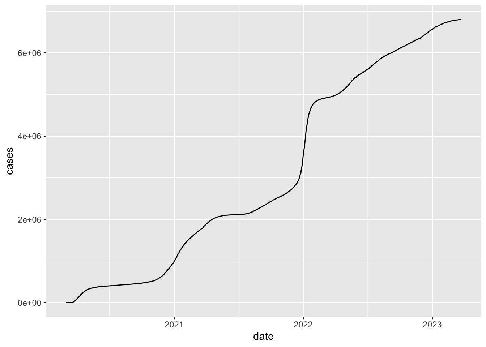
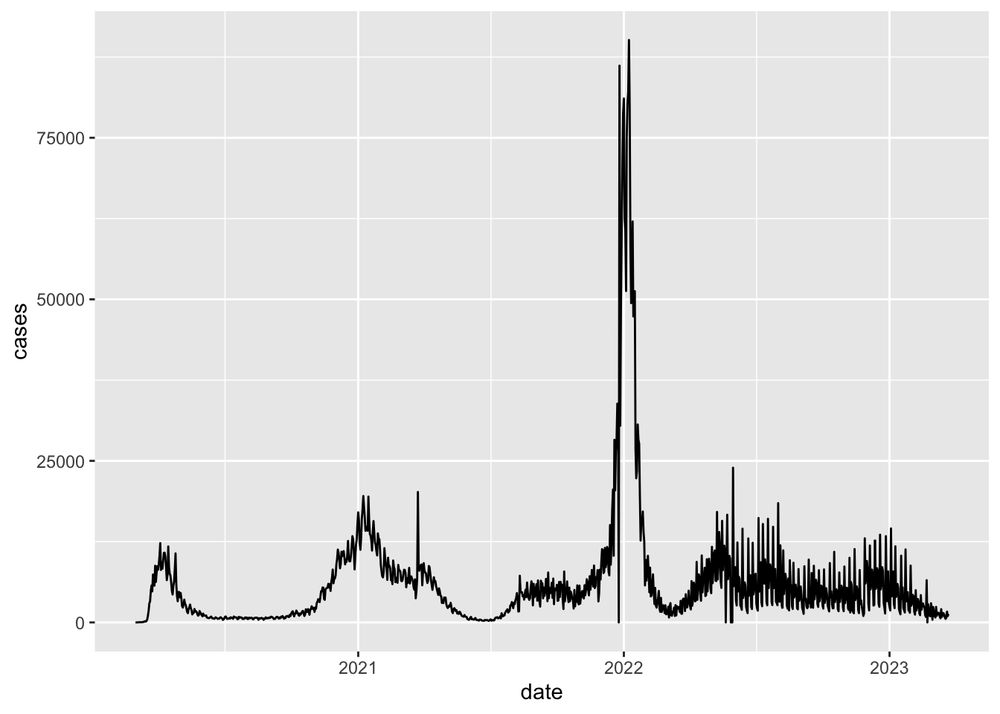
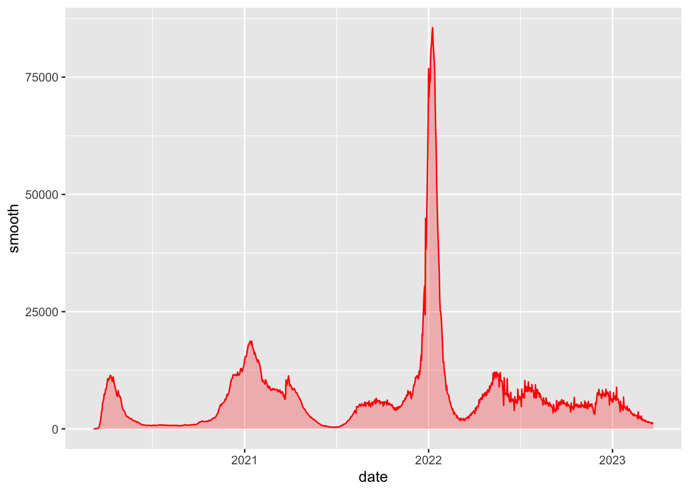
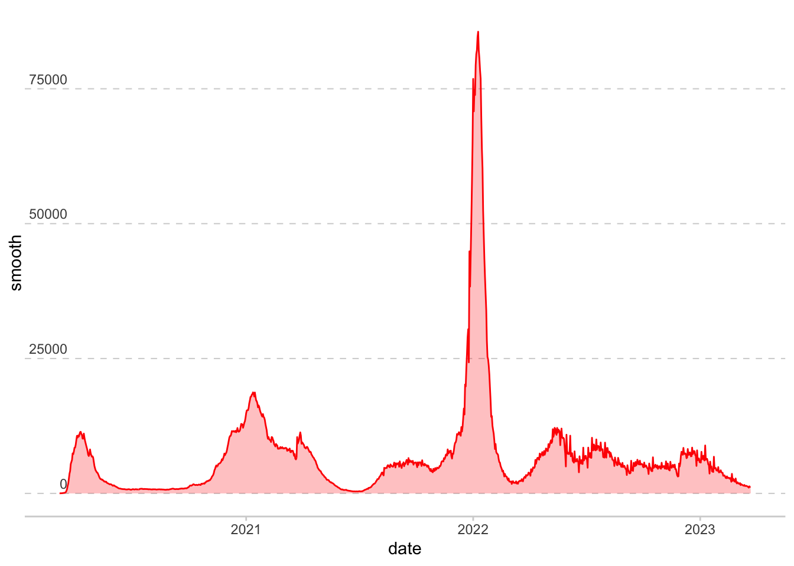
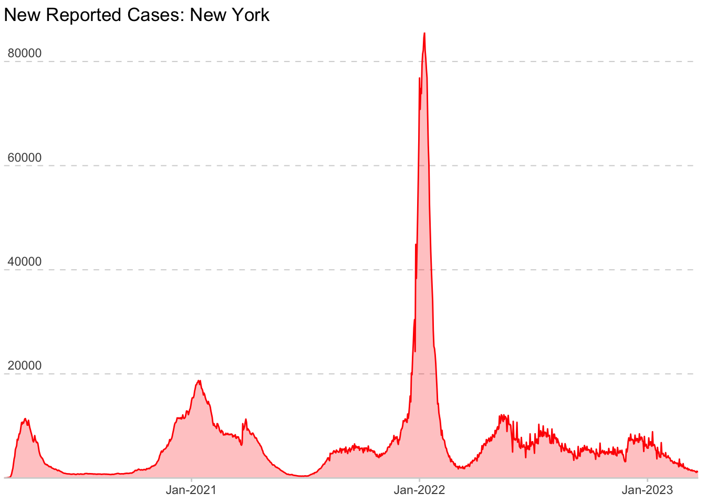

Claire’s Exam 1
About The Deep Dive
I decided to follow Nick Paul’s Blog on the internet to learn how he approaches the process to creating a compelling data story. This blog recreates NYT’s COVID Tracker visualization which I looked at daily during the peak COVID epidemic. I highly enjoyed being able to understand the new labeling and data wrangling mechanisms that were introduced through this blog. It will certainly help me with activities in class that ask me to recreate this advanced visualizations.
Code
Rows: 61,942
Columns: 5
$ date <date> 2020-01-21, 2020-01-22, 2020-01-23, 2020-01-24, 2020-01-24, 20…
$ state <chr> "Washington", "Washington", "Washington", "Illinois", "Washingt…
$ fips <chr> "53", "53", "53", "17", "53", "06", "17", "53", "04", "06", "17…
$ cases <dbl> 1, 1, 1, 1, 1, 1, 1, 1, 1, 2, 1, 1, 1, 2, 1, 1, 1, 2, 1, 1, 1, …
$ deaths <dbl> 0, 0, 0, 0, 0, 0, 0, 0, 0, 0, 0, 0, 0, 0, 0, 0, 0, 0, 0, 0, 0, …Rows: 1,118
Columns: 5
$ date <date> 2020-03-01, 2020-03-02, 2020-03-03, 2020-03-04, 2020-03-05, 20…
$ state <chr> "New York", "New York", "New York", "New York", "New York", "Ne…
$ fips <chr> "36", "36", "36", "36", "36", "36", "36", "36", "36", "36", "36…
$ cases <dbl> 1, 1, 2, 11, 22, 44, 89, 106, 142, 173, 217, 326, 421, 610, 732…
$ deaths <dbl> 0, 0, 0, 0, 0, 0, 0, 0, 0, 0, 0, 0, 0, 2, 6, 10, 18, 32, 39, 68…
Code
# The cases column has the cumulative cases up to that date.
# Lag function takes the difference between the current date and the previous date.
# = works in the same way as <-
df_ny = df_ny_raw %>%
mutate(cases = cases - lag(cases,
default = 0))
df_ny %>%
ggplot(aes(x = date, y = cases)) +
geom_line()
Code
# For day-to-day variability, sum the case counts from the current day and the previous 6 days and
# divide by 7 for days of week
df_ny_smooth = df_ny %>%
mutate(smooth = sum(cases,
lag(cases, 1), lag(cases, 2),
lag(cases, 3), lag(cases, 4),
lag(cases, 5), lag(cases, 6))
/7)
# Or, create a function to do so
rolling_average <- function(x, period = 7){
total = x
for(i in 1:period-1){
total = total + lag(x,i)
}
return(total/period)
}
df_ny_smooth = df_ny %>%
mutate(smooth = rolling_average(cases))
df_ny_smooth# A tibble: 1,118 × 6
date state fips cases deaths smooth
<date> <chr> <chr> <dbl> <dbl> <dbl>
1 2020-03-01 New York 36 1 0 NA
2 2020-03-02 New York 36 0 0 NA
3 2020-03-03 New York 36 1 0 NA
4 2020-03-04 New York 36 9 0 NA
5 2020-03-05 New York 36 11 0 NA
6 2020-03-06 New York 36 22 0 NA
7 2020-03-07 New York 36 45 0 19.1
8 2020-03-08 New York 36 17 0 17.4
9 2020-03-09 New York 36 36 0 25.3
10 2020-03-10 New York 36 31 0 28.9
# ℹ 1,108 more rowsCode

Code
# themes to note: panel.grid and background
plot_nyt <- plot_nyt +
theme(
panel.background = element_blank(),
axis.text.y = element_text(angle = 0, vjust = -.5,
margin = margin(r = -30)),
panel.grid.minor = element_blank(),
panel.grid.major.x = element_blank(),
panel.grid.major.y = element_line(colour = 'light grey',
linetype = 'dashed',size = .35),
axis.ticks.x = element_line(color = "light grey"),
axis.ticks.y = element_blank(),
axis.line.x = element_line(colour = "light grey", linetype = "solid",
size = .5))
plot_nyt
Code
# Adjusting the scales
breaks <- scales::extended_breaks()(df_ny_smooth$smooth)
breaks <- breaks[2:length(breaks)]
plot_nyt <- plot_nyt +
scale_x_date(expand = c(0,0),
date_labels = "%b-%Y") +
scale_y_continuous(expand = c(0,0),
breaks = breaks,
limits = c(0,max(df_ny_smooth$smooth))) +
labs(y = NULL,
x = NULL,
title = "New Reported Cases: New York")
plot_nyt
Code
# A tibble: 1 × 6
date state fips cases deaths smooth
<date> <chr> <chr> <dbl> <dbl> <dbl>
1 2021-09-19 New York 36 7724 54479 6547.Things I learned
I learned about dplyr function lag that takes a column that generates numbers cumulatively into one that subtracts previous values from the current one creating a day by day value.
I also learned about how to create a loop in R studio to clean data. axis.text.y = element_text(angle = 0, vjust = -.5, margin = margin(r = -30)) would’ve been helpful to know when I was doing hw2. The axis. functions were new to me and showed me how I can change labeling in ggplot.
extended_breaks() function from the scales package to automatically generate “nice” breaks (tick marks) for the y-axis based on the smooth column from the df_ny_smooth data frame.
breaks[2:length(breaks)] removes the first break value, typically 0. This is done to avoid a tick at 0 on the y-axis if it’s redundant or visually unhelpful.